私心推薦♥
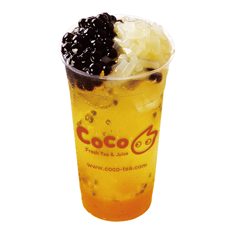
CoCo 百香雙響炮
CoCo就是以在飲品加很多料出名XD他們家的奶茶三兄弟也很火紅，但若不愛喝奶茶的朋友可以考慮百香雙響炮，酸酸甜甜的超好喝！
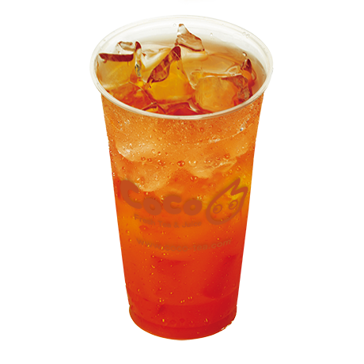
CoCo 南非國寶茶
他們家茶類我推薦南非國寶茶，喝上去很爽口不甜也不會膩，很適合夏天！
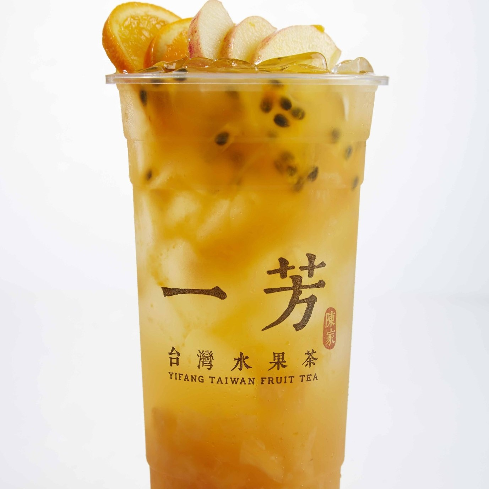
一芳 一芳水果茶
店裡招牌中的招牌，沒喝過一芳家的水果茶你就別說你喝過一芳！他們家的水果茶水果給的很大方，喝起來也非常好喝，算是各家有販賣水果茶的TOP1
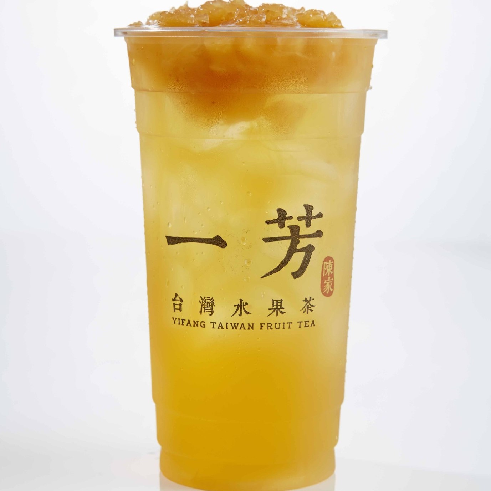
一芳 金鑽鳳梨綠
水果茶若第一，那這就是他們家的第二名，綠茶和鳳梨意外的絕配！
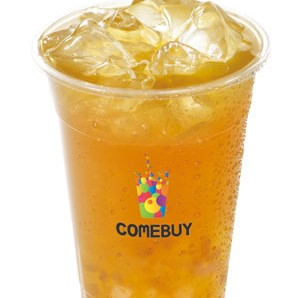
COMEBUY 蘋果冰茶
身為蘋果控，我第一次接觸的蘋果茶飲就是他們家的蘋果冰茶，能喝得到蘋果的香氣，盡量點半糖以下，更能喝到蘋果的風味喔！
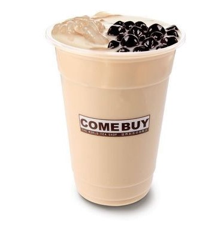
COMEBUY 絕代雙Q奶茶
COMEBUY的奶茶不會膩口，且黑白珍珠以及粉條加在一起也不違和，我認為是COMEBUY必喝之一！
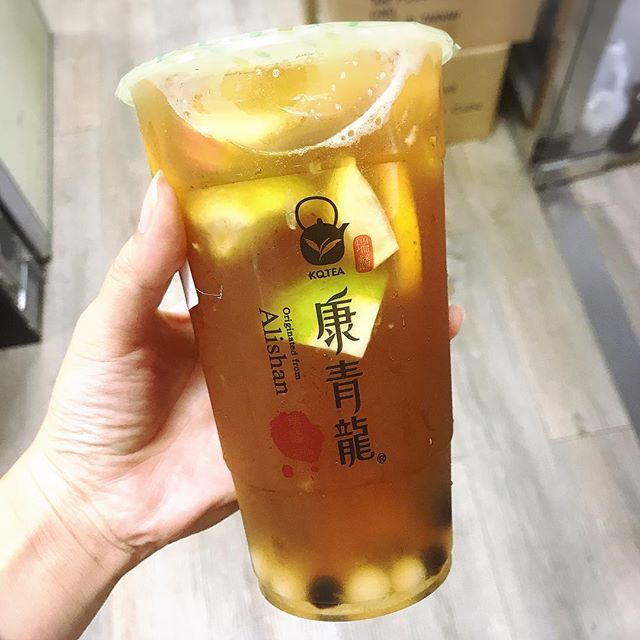
康青龍 格雷冰茶
很類似水果茶，是用伯爵紅茶為底，融合檸檬、柳橙、蘋果三種水果，清爽且多層次的口感，喝的到茶及水果的香氣！
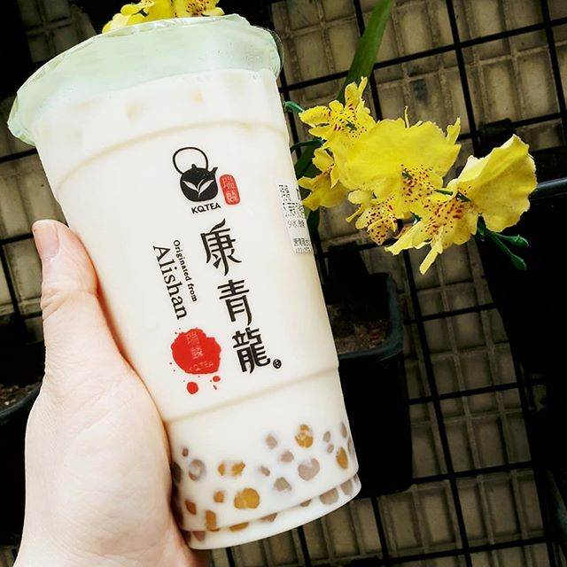
康青龍 茉莉奶綠芋圓
第一次喝到芋圓奶茶就是在康青龍，我發現他們家的奶綠很好喝，配上小顆有嚼勁的芋圓簡直讓人愛不釋手~~
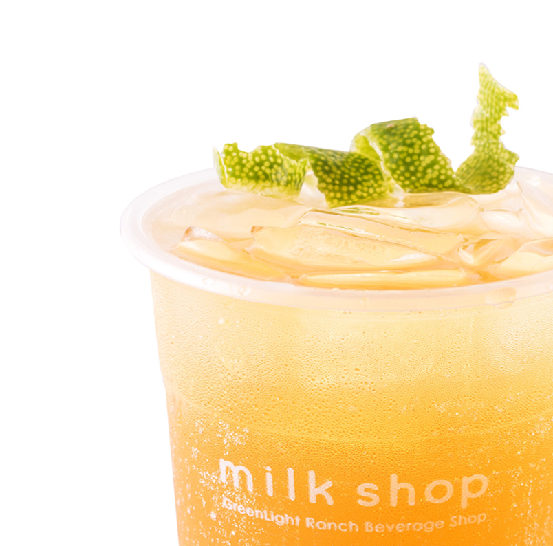
迷客夏 青檸香茶
這杯是全店裡我最激推的！真的能喝到淡淡清香，而且絕對不會膩！不過點這個的時候店員都會非常的煎熬，因為這杯就要手搖10分鐘以上！！！果然慢工出細活不是沒有道理><
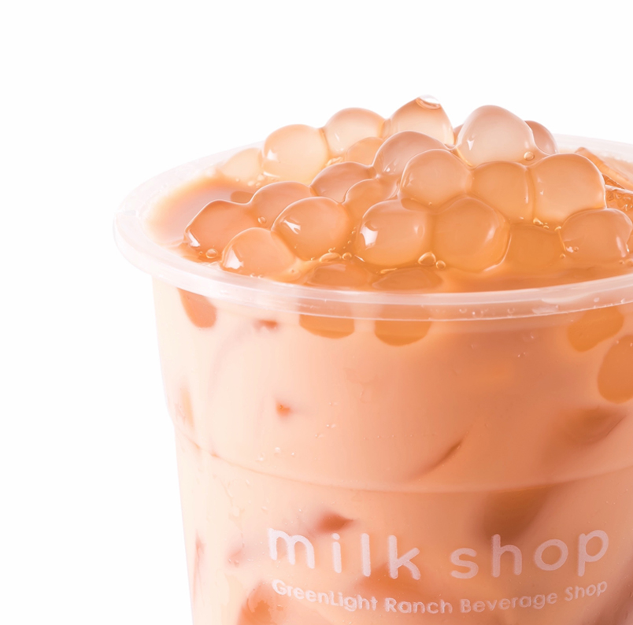
迷客夏 珍珠紅茶拿鐵
如果喜歡喝鮮奶茶配珍珠的可以考慮喝他們家的這個！因為他們家就是主打有自己的農場送鮮奶，且他們家的白熱珍珠好吃，很Q，有嚼勁
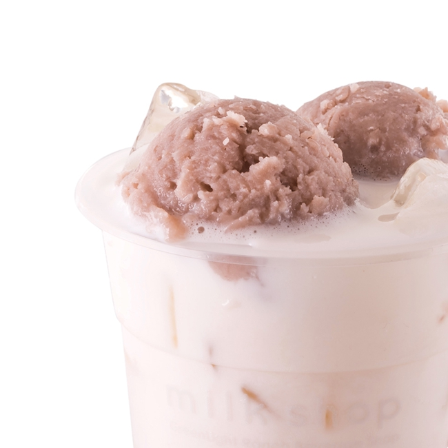
迷客夏 大甲芋頭鮮奶
芋頭給的超大方，可以吃到完整的芋頭！
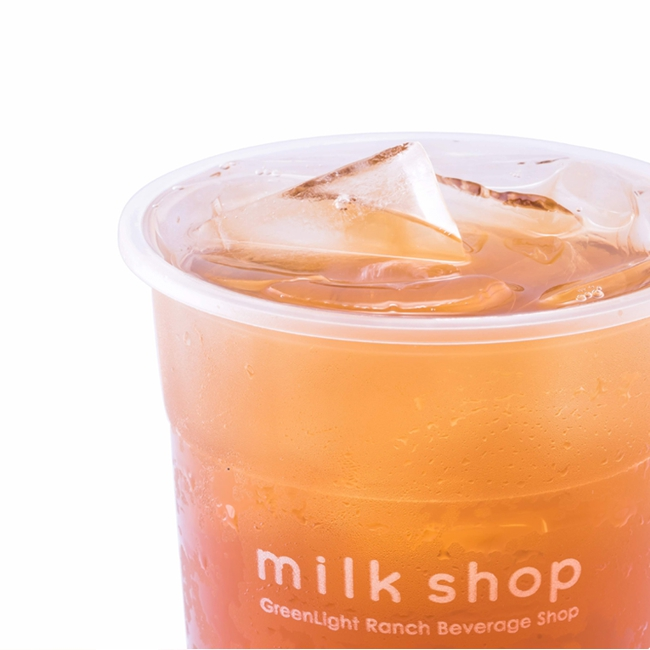
迷客夏 決明大麥
點的時候盡量點三分糖，不然會偏甜，和他們家的珍珠根本絕配
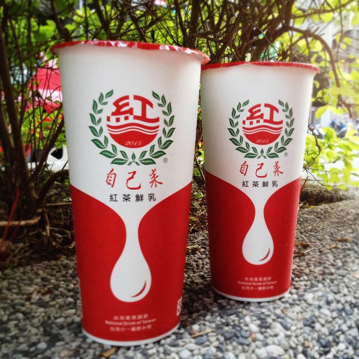
自己來 古早味紅茶鮮乳
這是我鮮奶茶手搖飲中最喜歡的！尤其紅茶點半糖會最對味
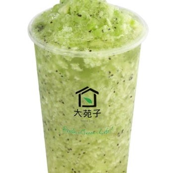
大苑子 奇異果冰鑽
大苑子的水果系列也很出名，這個在夏天喝的時候很清涼
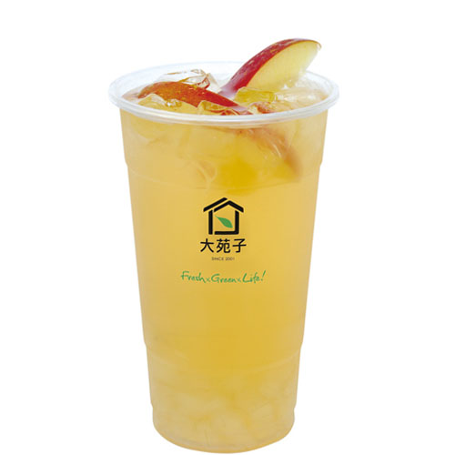
大苑子 蘋果醋冰茶
蘋果茶控的我也很喜歡他們家的蘋果醋冰茶，酸酸甜甜的真的很好喝

ikiwi趣味果飲 日式烤珍奶
這家雖然也以賣水果系列為主，但是日式烤珍奶意外的不錯喝，點三分糖是最好的選擇，而且珍珠很好吃~~